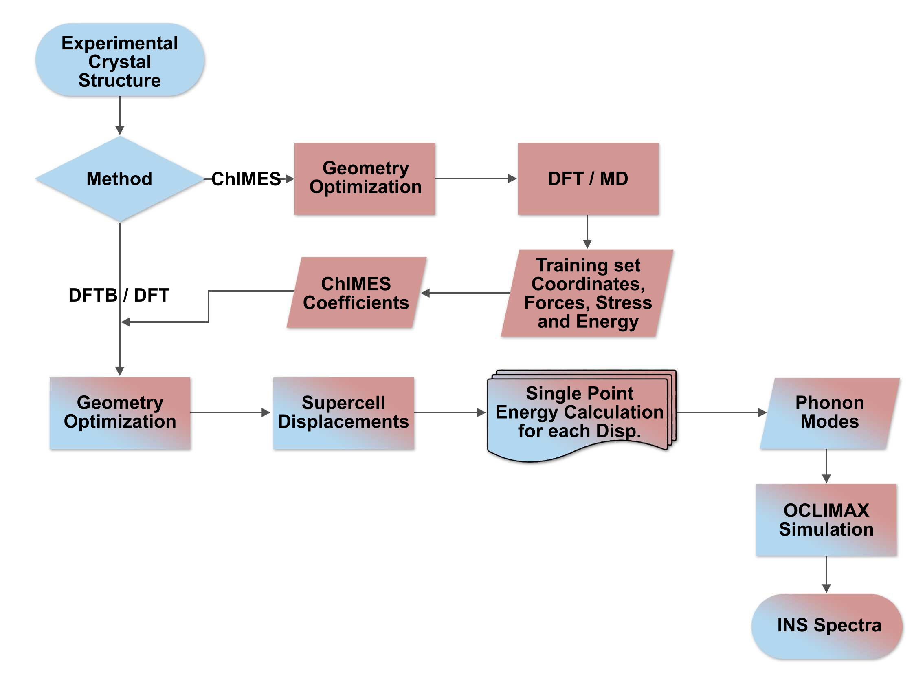

Workflow Description¶
The Davis Computational Spectroscopy workflow (DCS-Flow) was designed to connect and automate different material sciences tools which facilitate the use and comparison of electronic methods such as DFT, DFTB and machine learning to simulate the structure and dynamics of materials properties for improved structure property prediction. DCS-Flow provides an efficient workflow to create databases of Inelastic Neutron Scattering simulations (DCS Discover Database).
In the figure above, we present an overview of the complete workflow of the DCS-Flow method. The main part of it is composed by steps in blue or that contain a blue gradient. With the experimental crystal structure file and a set of workflow parameters as inputs, we optimize the structure, simulate the lattice dynamics with the supercell method and calculate the INS spectrum. This is called the main workflow.
In the other hand, the red boxes represent the training workflow, in which the ChIMES model is employed. It starts with the optimization of the structure, followed by a DFT-MD simulation from which a training set of forces, stress tensors and energies is extracted. Finally, the ChIMES model is trained to this set creating coefficients that correct the DFTB calculations. The possibility of correcting the main workflow is represented by a red gradient.